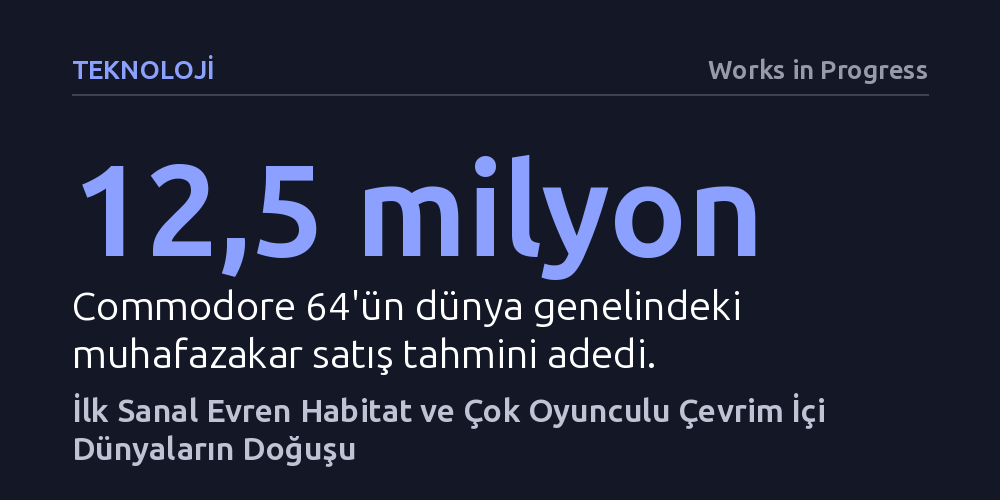

TEKNOLOJI · Works in Progress · 2026-09-09
Lucasfilm'in 1980'lerde Commodore 64 üzerinde geliştirdiği Habitat, avatar kavramından sanal ekonomiye kadar çevrim içi dünyaların tüm yapı taşlarını kurdu. Bu tecrübe, dijital topluluklarda insan davranışının teknik tasarımdan çok daha öngörülemez olduğunu sosyal medyadan on yıllar önce kanıtladı.
Sanal ekonomilerin, dijital kimliklerin ve çevrim içi topluluk krizlerinin modern internete özgü olmadığını, insan doğasının bu dinamikleri kırk yıl önceki ilkel bir ev bilgisayarında dahi birebir ürettiğini gösterir.

Çok oyunculu sanal evrenlerin başlangıcı, günümüz standartlarına göre son derece mütevazı sayılan bir donanım üzerinde şekillendi. 1982 yılı sonunda piyasaya sürülen ve adını o dönem için cömert sayılan 64 kilobaytlık belleğinden alan Commodore 64, yaklaşık 12,5 milyonluk satışıyla tarihin en çok satan masaüstü bilgisayarı oldu. Düşük maliyetli endüstriyel işlemcisi, sentezleyicilerden esinlenen gelişmiş ses çipi ve renk paleti sayesinde yüksek fiyatlı rakiplerinden ayrışarak evlere girdi. Şirketin kurucusu Jack Tramiel'in benimsediği "sınıflar için değil, kitleler için bilgisayar" anlayışı, video oyunlarını jetonla çalışan atari salonlarının darlığından kurtarıp ev ortamına taşıdı.
Dönemin teknoloji çevreleri Commodore 64'ü sırf oyun yetenekleri sebebiyle ciddiyetsiz bir cihaz olarak etiketlese de makinenin asıl kültürel devrimi ağ bağlantısıyla gerçekleşti. 1986'da sunulan QuantumLink (Q-Link) hizmeti, mesai saatleri dışındaki boş iletim hatlarını kiralayarak ve yenilikçi istemci-sunucu mimarisini kullanarak bağlantı maliyetlerini radikal biçimde düşürdü. CompuServe gibi iş odaklı pahalı ağların aksine saatliği 3 dolara kadar inen bu ucuz ağ, binlerce ev kullanıcısının forumlarda buluşmasını, sohbet etmesini ve satranç gibi çok oyunculu oyunları birlikte oynamasını mümkün kıldı.
Q-Link üzerinde çalışan en çığır açıcı proje, Lucasfilm bünyesinde geliştirilen Habitat oldu. Dönemin teknoloji yazarları ve pazarlamacıları bu sistemi tanımlamakta zorlanarak ona etkileşimli sinema veya çok oyunculu macera oyunu gibi isimler yakıştırmaya çalıştı. Oysa Habitat geleneksel video oyunlarından tamamen farklıydı; ne önceden yazılmış bir senaryosu ne de ulaşılması gereken somut bir hedefi vardı. Oyunculara sadece birbiriyle iletişim kurabilecekleri, kurallarını kendilerinin yazacağı minyatür bir toplum inşa etme araçları sunuluyordu.
Bugün çevrim içi platformlarda olağan kabul ettiğimiz birçok temel kavram ilk kez Habitat ortamında vücut buldu. Kullanıcının dijital temsilcisine avatar denmesi, oyunculara günlük girişlerle sanal para aktarılması ve kullanıcılar arası ticaret bu sistemle başladı. Katılımcılar ev satın alıp dekore edebiliyor, avatarlarının görünümlerini kişiselleştirebiliyor, konuşma balonlarıyla sohbet edip sanal partiler düzenleyebiliyordu. Hatta topluluk içinden kendi bağımsız gazetesini çıkaranlar ve kurmaca dini tarikatlar kuranlar bile ortaya çıktı.
Sistemin yaratıcıları Chip Morningstar ve F. Randall Farmer, açık uçlu ve çoğulcu bir yapı tasarlamış olsalar da yüzlerce katılımcının bir araya gelmesiyle anında beklenmedik krizlerle yüzleştiler. Tasarımcıların haftalarca emek vererek hazırladığı bulmaca tabanlı karmaşık bir hazine avı, uyanık bir oyuncu tarafından yalnızca sekiz saat içinde çözüldü. Bu durum, devasa bir içerik yatırımının bir göz açıp kapayıncaya kadar tükenmesine ve diğer oyuncuların hayal kırıklığına uğramasına yol açtı. Geliştiriciler bu tecrübeyle klasik içerik üreticisi rolünü bırakıp sistem kuralları koyan yöneticilere dönüşmek zorunda kaldı.
Çok geçmeden sistemin ekonomik dengesi de sarsıldı. Eşya alım satımı yapılan otomatların kasaba genelindeki fiyat farklarını fark eden bazı oyuncular, ucuz yerden aldıkları oyuncak bebekleri ve kristal küreleri pahalı yere satarak devasa bir arbitraj döngüsü kurdu. Bir gecede yüz binlerce sanal birim kazanan bu oyuncular, sanal evrendeki para arzını beş katına çıkararak tarihin ilk kopyalama ve haksız kazanç vakalarından birine imza attı. Geliştiriciler hatayı düzelttikten sonra parayı silmek yerine oyuncuların bu servetle topluluk için etkinlikler düzenlemesine izin vererek krizi yapıcı bir uzlaşıyla sonlandırdı.
Bu erken dijital dünyaya duyulan tutku, beraberinde ciddi maliyetler getirdi. Saatlik bağlantı ücretinin 4,80 dolara çıktığı dönemde kimi oyuncular ayda yüzlerce dolarlık faturalarla karşılaştı. Q-Link, sistemi daha geniş kitlelere ulaştırmak amacıyla fantastik unsurları ve silahları budayarak oyunu bir ada tatili temasıyla Club Caribe adıyla yeniden başlattı. Buna rağmen oyuncuların yaratıcılığı engellenemedi; pembe piksellerden oluşan nü plajlar, penguen yarışları ve koreografik avatar gösterileri gibi özgün alt kültürler kısa sürede filizlendi.
Habitat, sosyal ağların ve sanal evrenlerin ortaya çıkışından on yıllar önce, geniş kitlelerin çevrim içi bir araya gelişinin tüm karmaşıklığını gözler önüne serdi. Topluluğa değer katan ve dayanışmayı örgütleyen bireylerin yanı sıra sistemi suiistimal eden ve kaostan beslenen aktörlerin de varlığı, dijital mecraların teknik bir kod yığınından ibaret olmadığını kanıtladı. İlk sanal evren, çevrim içi ortama adım atan insanların iyiden kötüye, tuhaftan çılgınlığa kadar insan doğasının tüm yelpazesini eksiksiz sergileyeceğini çok erken bir tarihte belgeledi.